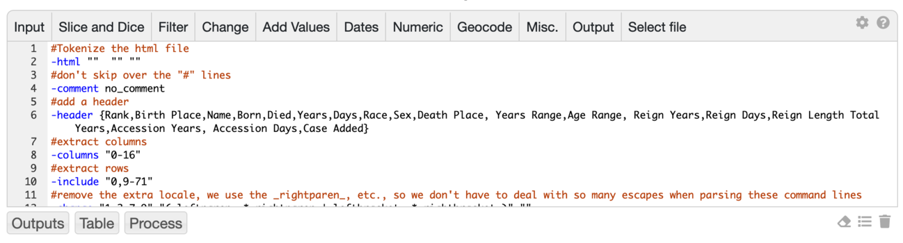

<html>
<head>
<title>ETL Tools</title>
  <link rel="stylesheet" type="text/css" href="./default.css" title="Style">

</head>

<body>
<div class="ramadda-documentation">
<table width=100% cellspacing=0 cellpadding=0 ><tr><td width=30%>
<a href="page_datafacilities.html"><span title="Previous: Data Facilities"><i class="fa fa-caret-left "></i></span></a> <a href="dataexample.html"><span title="Next: Data Example"><i class="fa fa-caret-right "></i></span></a>  <a href="toc.html#etl.html"><span title="Table of contents"><i class="fa fa-list "></i></span></a>
</td>
<td width=40% align=center>
<div class="ramadda-page-title"><a href="${root}/userguide/index.html">RAMADDA User Guide</a></div>
</td>
<td width=30%>&nbsp;</td>
</tr></table>
<div class="ramadda-page-heading">Section 7.0: ETL Tools</div>

<style type="text/css">
pre {
    margin-left:15px;
}
</style>

<div style="margin-left:20px;">


<a name="etl"></a><p><div class="ramadda-help-heading">7.0.0 <a href="#etl">Extract, Transform, Load CSV Files</a></div> 

RAMADDA provides an interactive facility to transform CSV, JSON, XML or HTML files and create structured
point data files and databases.
<p>
To start, upload the CSV/JSON/XML/HTML file into RAMADDA. Go to the  <code class="menu">Main Menu-&gt;View-&gt;Convert Data</code> menu to see the conversion interface below.  <a href="https://geodesystems.com/repository/entry/show/Home/Content/RAMADDA+Examples+Data/Documentation/World%27s+Oldest+People+Raw+Html+File?entryid=920b0986-c7c2-4a8f-8e8f-22e52fd865e8&output=convert_form">Here</a> is the convert page for the below example.
<center><a name="image1"></a><div><a href="images/etl.png"></a><br><span class="caption">Image 1: CSV Conversion Interface</span></div></center>

A pipeline of commands are defined for manipulating the rows and columns of the source file. 
These commands can be on the same line or on multiple lines. If on multiple lines then the intermediate processing results of each line of commands is available. Prefix a line with "#" to comment out the line.


<ul>
  <li> The <span><i class="fa fa-plus"></i></span> button allows you to add a new command. Once added you can edit the command in place or right click on the command to bring up the command editor dialog (see below).
  <li> The <span><i class="fa fa-file"></i></span> button allows you to insert a reference to another file in RAMADDA for those c
ommands (e.g., join) that require other files.
  <li> The <span><i class="fa fa-sliders-h"></i></span> button allows you to specify settings -
    <ul>
    </ul>
  <li> The <span><i class="fa fa-question-circle"></i></span> button displays help.
  <li> The Header, Table, Records, etc., buttons runs the commands and produces different output.
The Save checkbox saves the command text when you run the commands so you can return to it later. 
The Do Commands checkbox applies the commands when you press one of the run buttons.
</ul>


Many of the commands below take a columns specification. This takes the form of:
<pre>
&quot;colA,colB,colC-colD,colE,...&quot;
e.g.:
&quot;0,1,2,7-10,12&quot;
</pre>


<a name="html"></a><p><div class="ramadda-help-heading">7.0.1 <a href="#html">Extracting HTML</a></div> 
The conversion service supports extracting data from an HTML table in a HTML page. Save the HTML page and upload to RAMADDA as a CSV File entry type. Then go to the conversion page.  The first command to enter is the -html command:
<pre>
-html &quot;name value arguments&quot;
</pre>


The name/value arguments include:
<pre>
-html &quot;skip &lt;how many tables in the HTML file to skip&gt;&quot;
-html &quot;removePattern &lt;regexp pattern to remove&gt;  removePattern2 &lt;another pattern to remove&gt;&quot;
</pre>

Because there are many levels of parsing of escape characters if 
you need to remove text that contains special regular expression characters - [,],(,) and . - use the special tags:
_leftbracket_, _rightbracket_, _leftparent_, _rightparen_, _dot_, e.g.:

<pre>
-html &quot;removePattern _leftbracket_.*?_rightbracket_ &quot;
</pre>


<a name="slice and dice"></a><p><div class="ramadda-help-heading">7.0.2 <a href="#slice and dice">Slice and Dice</a></div> <a name="columns"></a>
<div class="ramadda-help-subsubheading"><a href="#columns">Select columns</a>
</div> <pre>-columns  &lt;<i>columns</i>&gt; Column indices, one per line. Can include ranges, e.g. 0-5 </pre>Only include the given columns<p><a name="notcolumns"></a>
<div class="ramadda-help-subsubheading"><a href="#notcolumns">Deselect columns</a>
</div> <pre>-notcolumns  &lt;<i>columns</i>&gt; Column indices, one per line. Can include ranges, e.g. 0-5 </pre>Don't include given columns<p><a name="delete"></a>
<div class="ramadda-help-subsubheading"><a href="#delete">Delete columns</a>
</div> <pre>-delete  &lt;<i>columns</i>&gt; Column indices, one per line. Can include ranges, e.g. 0-5 </pre>Remove the columns<p><a name="cut"></a>
<div class="ramadda-help-subsubheading"><a href="#cut">Drop rows</a>
</div> <pre>-cut  &lt;<i>rows</i>&gt; One or more rows. -1 to the end. e.g., 0-3,5,10,-1 </pre><p><a name="include"></a>
<div class="ramadda-help-subsubheading"><a href="#include">Include rows</a>
</div> <pre>-include  &lt;<i>rows</i>&gt; one or more rows, -1 to the end </pre>Only include specified rows<p><a name="skip"></a>
<div class="ramadda-help-subsubheading"><a href="#skip">Skip</a>
</div> <pre>-skip  &lt;<i>rows</i>&gt; How many rows to skip </pre>Skip number of rows<p><a name="copy"></a>
<div class="ramadda-help-subsubheading"><a href="#copy">Copy column</a>
</div> <pre>-copy  &lt;<i>column</i>&gt; 
	 &lt;<i>name</i>&gt; </pre><p><a name="insert"></a>
<div class="ramadda-help-subsubheading"><a href="#insert">Insert column</a>
</div> <pre>-insert  &lt;<i>column</i>&gt; Column to insert after 
	 &lt;<i>values</i>&gt; Single value or comma separated for multiple rows </pre>Insert new column values<p><a name="concat"></a>
<div class="ramadda-help-subsubheading"><a href="#concat">Concat</a>
</div> <pre>-concat  &lt;<i>columns</i>&gt; Column indices, one per line. Can include ranges, e.g. 0-5 
	 &lt;<i>delimiter</i>&gt; </pre>Create a new column from the given columns<p><a name="split"></a>
<div class="ramadda-help-subsubheading"><a href="#split">Split</a>
</div> <pre>-split  &lt;<i>column</i>&gt; 
	 &lt;<i>delimiter</i>&gt; What to split on 
	 &lt;<i>names</i>&gt; Comma separated new column names </pre>Split the column<p><a name="splat"></a>
<div class="ramadda-help-subsubheading"><a href="#splat">Splat</a>
</div> <pre>-splat  &lt;<i>key col</i>&gt; 
	 &lt;<i>column</i>&gt; 
	 &lt;<i>delimiter</i>&gt; 
	 &lt;<i>name</i>&gt; new column name </pre>Create a new column from the values in the given column<p><a name="shift"></a>
<div class="ramadda-help-subsubheading"><a href="#shift">Shift columns</a>
</div> <pre>-shift  &lt;<i>rows</i>&gt; Rows to apply to 
	 &lt;<i>column</i>&gt; Column to start at 
	 &lt;<i>count</i>&gt; </pre>Shift columns over by count for given rows<p><a name="addcell"></a>
<div class="ramadda-help-subsubheading"><a href="#addcell">Add cell</a>
</div> <pre>-addcell  &lt;<i>row</i>&gt; 
	 &lt;<i>column</i>&gt; 
	 &lt;<i>value</i>&gt; </pre>Add a new cell at row/column<p><a name="deletecell"></a>
<div class="ramadda-help-subsubheading"><a href="#deletecell">Delete cell</a>
</div> <pre>-deletecell  &lt;<i>row</i>&gt; 
	 &lt;<i>column</i>&gt; </pre>Delete cell at row/column<p><a name="mergerows"></a>
<div class="ramadda-help-subsubheading"><a href="#mergerows">Merge rows</a>
</div> <pre>-mergerows  &lt;<i>rows</i>&gt; 2 or more rows 
	 &lt;<i>delimiter</i>&gt; 
	 &lt;<i>close</i>&gt; </pre><p><a name="rowop"></a>
<div class="ramadda-help-subsubheading"><a href="#rowop">Row Operator</a>
</div> <pre>-rowop  &lt;<i>keys</i>&gt; Key columns 
	 &lt;<i>values</i>&gt; Value columns 
	 &lt;<i>operator</i>&gt; Operator </pre>Apply an operator to columns and merge rows<p><a name="rotate"></a>
<div class="ramadda-help-subsubheading"><a href="#rotate">Rotate</a>
</div> <pre>-rotate </pre>Rotate the data<p><a name="flip"></a>
<div class="ramadda-help-subsubheading"><a href="#flip">Flip</a>
</div> <pre>-flip </pre>Reverse the order of the rows except the header<p><a name="unfurl"></a>
<div class="ramadda-help-subsubheading"><a href="#unfurl">Unfurl</a>
</div> <pre>-unfurl  &lt;<i>column</i>&gt; column to get new column header# 
	 &lt;<i>value columns</i>&gt; Columns to get values from 
	 &lt;<i>unique column</i>&gt; The unique value, e.g. date 
	 &lt;<i>other columns</i>&gt; Other columns to include </pre>Make columns from data values<p><a name="furl"></a>
<div class="ramadda-help-subsubheading"><a href="#furl">Furl</a>
</div> <pre>-furl  &lt;<i>columns</i>&gt; Column indices, one per line. Can include ranges, e.g. 0-5 
	 &lt;<i>header label</i>&gt; 
	 &lt;<i>value label</i>&gt; </pre>Use values in header to make new row<p><a name="explode"></a>
<div class="ramadda-help-subsubheading"><a href="#explode">Explode</a>
</div> <pre>-explode  &lt;<i>column</i>&gt; </pre>Make separate files based on value of column<p><a name="join"></a>
<div class="ramadda-help-subsubheading"><a href="#join">Join</a>
</div> <pre>-join  &lt;<i>key columns</i>&gt; 
	 &lt;<i>value_columns</i>&gt; value columns 
	 &lt;<i>file</i>&gt; File to join with 
	 &lt;<i>source_columns</i>&gt; source key columns </pre>Join the 2 files together<p><a name="filter"></a><p><div class="ramadda-help-heading">7.0.3 <a href="#filter">Filter</a></div> <a name="start"></a>
<div class="ramadda-help-subsubheading"><a href="#start">Start</a>
</div> <pre>-start  &lt;<i>start pattern</i>&gt; </pre>Start at pattern in source file<p><a name="stop"></a>
<div class="ramadda-help-subsubheading"><a href="#stop">Stop</a>
</div> <pre>-stop  &lt;<i>stop pattern</i>&gt; </pre>End at pattern in source file<p><a name="rawlines"></a>
<div class="ramadda-help-subsubheading"><a href="#rawlines">Rawlines</a>
</div> <pre>-rawlines  &lt;<i>lines</i>&gt; How many lines to pass through unprocesed </pre><p><a name="min"></a>
<div class="ramadda-help-subsubheading"><a href="#min">Min</a>
</div> <pre>-min  &lt;<i>min # columns</i>&gt; </pre>Only pass thorough lines that have at least this number of columns<p><a name="max"></a>
<div class="ramadda-help-subsubheading"><a href="#max">Max</a>
</div> <pre>-max  &lt;<i>max # columns</i>&gt; </pre>Only pass through lines that have no more than this number of columns<p><a name="pattern"></a>
<div class="ramadda-help-subsubheading"><a href="#pattern">Pattern</a>
</div> <pre>-pattern  &lt;<i>column</i>&gt; 
	 &lt;<i>pattern</i>&gt; </pre>Pass through rows that match the pattern<p><a name="notpattern"></a>
<div class="ramadda-help-subsubheading"><a href="#notpattern">Notpattern</a>
</div> <pre>-notpattern  &lt;<i>column</i>&gt; 
	 &lt;<i>pattern</i>&gt; </pre>Pass through rows that don't match the pattern<p><a name="unique"></a>
<div class="ramadda-help-subsubheading"><a href="#unique">Unique</a>
</div> <pre>-unique  &lt;<i>columns</i>&gt; Column indices, one per line. Can include ranges, e.g. 0-5 </pre>Pass through unique values<p><a name="dups"></a>
<div class="ramadda-help-subsubheading"><a href="#dups">Duplicate values</a>
</div> <pre>-dups  &lt;<i>columns</i>&gt; Column indices, one per line. Can include ranges, e.g. 0-5 </pre>Pass through duplicate values<p><a name="maxvalue"></a>
<div class="ramadda-help-subsubheading"><a href="#maxvalue">Max value</a>
</div> <pre>-maxvalue  &lt;<i>key column</i>&gt; 
	 &lt;<i>value column</i>&gt; </pre><p><a name="eq"></a>
<div class="ramadda-help-subsubheading"><a href="#eq">Equals</a>
</div> <pre>-eq  &lt;<i>column</i>&gt; 
	 &lt;<i>value</i>&gt; </pre>Extract rows that pass the expression<p><a name="ne"></a>
<div class="ramadda-help-subsubheading"><a href="#ne">Not equals</a>
</div> <pre>-ne  &lt;<i>column</i>&gt; 
	 &lt;<i>value</i>&gt; </pre>Extract rows that pass the expression<p><a name="gt"></a>
<div class="ramadda-help-subsubheading"><a href="#gt">Greater than</a>
</div> <pre>-gt  &lt;<i>column</i>&gt; 
	 &lt;<i>value</i>&gt; </pre>Extract rows that pass the expression<p><a name="ge"></a>
<div class="ramadda-help-subsubheading"><a href="#ge">Greater than/equals</a>
</div> <pre>-ge  &lt;<i>column</i>&gt; 
	 &lt;<i>value</i>&gt; </pre>Extract rows that pass the expression<p><a name="lt"></a>
<div class="ramadda-help-subsubheading"><a href="#lt">Less than</a>
</div> <pre>-lt  &lt;<i>column</i>&gt; 
	 &lt;<i>value</i>&gt; </pre>Extract rows that pass the expression<p><a name="le"></a>
<div class="ramadda-help-subsubheading"><a href="#le">Less than/equals</a>
</div> <pre>-le  &lt;<i>column</i>&gt; 
	 &lt;<i>value</i>&gt; </pre>Extract rows that pass the expression<p><a name="groupfilter"></a>
<div class="ramadda-help-subsubheading"><a href="#groupfilter">Group filter</a>
</div> <pre>-groupfilter  &lt;<i>column</i>&gt; 
	 &lt;<i>value_column</i>&gt; Value column 
	 &lt;<i>operator</i>&gt; 
	 &lt;<i>value</i>&gt; </pre>One row in each group has to match<p><a name="before"></a>
<div class="ramadda-help-subsubheading"><a href="#before">Before date</a>
</div> <pre>-before  &lt;<i>column</i>&gt; 
	 &lt;<i>format</i>&gt; 
	 &lt;<i>date</i>&gt; 
	 &lt;<i>format2</i>&gt; </pre><p><a name="after"></a>
<div class="ramadda-help-subsubheading"><a href="#after">After date</a>
</div> <pre>-after  &lt;<i>column</i>&gt; 
	 &lt;<i>format</i>&gt; 
	 &lt;<i>date</i>&gt; 
	 &lt;<i>format2</i>&gt; </pre><p><a name="latest"></a>
<div class="ramadda-help-subsubheading"><a href="#latest">Latest date</a>
</div> <pre>-latest  &lt;<i>columns</i>&gt; Key columns 
	 &lt;<i>column</i>&gt; Date column 
	 &lt;<i>format</i>&gt; </pre><p><a name="countvalue"></a>
<div class="ramadda-help-subsubheading"><a href="#countvalue">Max unique values</a>
</div> <pre>-countvalue  &lt;<i>column</i>&gt; 
	 &lt;<i>count</i>&gt; </pre>No more than count unique values<p><a name="decimate"></a>
<div class="ramadda-help-subsubheading"><a href="#decimate">Decimate</a>
</div> <pre>-decimate  &lt;<i>rows</i>&gt; # of start rows to include 
	 &lt;<i>skip</i>&gt; skip factor </pre>only include every &lt;skip factor&gt; row<p><a name="skipline"></a>
<div class="ramadda-help-subsubheading"><a href="#skipline">Skipline</a>
</div> <pre>-skipline  &lt;<i>pattern</i>&gt; </pre>Skip any line that matches the pattern<p><a name="change values"></a><p><div class="ramadda-help-heading">7.0.4 <a href="#change values">Change Values</a></div> <a name="change"></a>
<div class="ramadda-help-subsubheading"><a href="#change">Change</a>
</div> <pre>-change  &lt;<i>columns</i>&gt; Column indices, one per line. Can include ranges, e.g. 0-5 
	 &lt;<i>pattern</i>&gt; 
	 &lt;<i>substitution string</i>&gt; use $1, $2, etc for pattern (...) matches </pre>Change columns<p><a name="changerow"></a>
<div class="ramadda-help-subsubheading"><a href="#changerow">Changerow</a>
</div> <pre>-changerow  &lt;<i>rows</i>&gt; Row indices, one per line. Can include ranges, e.g. 0-5 
	 &lt;<i>columns</i>&gt; Column indices, one per line. Can include ranges, e.g. 0-5 
	 &lt;<i>pattern</i>&gt; 
	 &lt;<i>substitution string</i>&gt; </pre>Change the values in the row/cols<p><a name="set"></a>
<div class="ramadda-help-subsubheading"><a href="#set">Set</a>
</div> <pre>-set  &lt;<i>columns</i>&gt; Column indices, one per line. Can include ranges, e.g. 0-5 
	 &lt;<i>rows</i>&gt; Row indices, one per line. Can include ranges, e.g. 0-5 
	 &lt;<i>value</i>&gt; </pre>Write the value into the cells<p><a name="macro"></a>
<div class="ramadda-help-subsubheading"><a href="#macro">Macro</a>
</div> <pre>-macro  &lt;<i>pattern</i>&gt; 
	 &lt;<i>template</i>&gt; 
	 &lt;<i>column label</i>&gt; </pre>Look for the pattern in the header and apply the template to make a new column, template: '{1} {2} ...', use 'none' for column name for no header<p><a name="setcol"></a>
<div class="ramadda-help-subsubheading"><a href="#setcol">Setcol</a>
</div> <pre>-setcol  &lt;<i>column</i>&gt; match col # 
	 &lt;<i>pattern</i>&gt; 
	 &lt;<i>write column</i>&gt; 
	 &lt;<i>value</i>&gt; </pre>Write the value into the write col for rows that match the pattern<p><a name="priorprefix"></a>
<div class="ramadda-help-subsubheading"><a href="#priorprefix">Priorprefix</a>
</div> <pre>-priorprefix  &lt;<i>column</i>&gt; 
	 &lt;<i>pattern</i>&gt; 
	 &lt;<i>delimiter</i>&gt; </pre>Append prefix from the previous element to rows that match pattern<p><a name="case"></a>
<div class="ramadda-help-subsubheading"><a href="#case">Case</a>
</div> <pre>-case  &lt;<i>type</i>&gt; 
	 &lt;<i>column</i>&gt; </pre>Change case of column<p><a name="width"></a>
<div class="ramadda-help-subsubheading"><a href="#width">Width</a>
</div> <pre>-width  &lt;<i>columns</i>&gt; Column indices, one per line. Can include ranges, e.g. 0-5 
	 &lt;<i>size</i>&gt; </pre>Limit the string size of the columns<p><a name="prepend"></a>
<div class="ramadda-help-subsubheading"><a href="#prepend">Prepend</a>
</div> <pre>-prepend  &lt;<i>text</i>&gt; </pre>Add the text to the beginning of the file. use _nl_ to insert newlines<p><a name="pad"></a>
<div class="ramadda-help-subsubheading"><a href="#pad">Pad</a>
</div> <pre>-pad  &lt;<i>count</i>&gt; 
	 &lt;<i>pad string</i>&gt; </pre>Add or remove columns to achieve the count<p><a name="prefix"></a>
<div class="ramadda-help-subsubheading"><a href="#prefix">Prefix</a>
</div> <pre>-prefix  &lt;<i>column</i>&gt; 
	 &lt;<i>prefix</i>&gt; </pre>Add prefix to column<p><a name="suffix"></a>
<div class="ramadda-help-subsubheading"><a href="#suffix">Suffix</a>
</div> <pre>-suffix  &lt;<i>column</i>&gt; 
	 &lt;<i>suffix</i>&gt; </pre>Add suffix to column<p><a name="js"></a>
<div class="ramadda-help-subsubheading"><a href="#js">Js</a>
</div> <pre>-js  &lt;<i>javascript</i>&gt; </pre>Define Javascript e.g., functions to use later in the -func call<p><a name="func"></a>
<div class="ramadda-help-subsubheading"><a href="#func">Func</a>
</div> <pre>-func  &lt;<i>names</i>&gt; New column names 
	 &lt;<i>javascript</i>&gt; javascript expression </pre>Apply the javascript function. Use _colname or _col#<p><a name="endswith"></a>
<div class="ramadda-help-subsubheading"><a href="#endswith">Endswith</a>
</div> <pre>-endswith  &lt;<i>column</i>&gt; 
	 &lt;<i>string</i>&gt; </pre>Ensure that each column ends with the string<p><a name="trim"></a>
<div class="ramadda-help-subsubheading"><a href="#trim">Trim</a>
</div> <pre>-trim  &lt;<i>columns</i>&gt; Column indices, one per line. Can include ranges, e.g. 0-5 </pre>Trim the string values<p><a name="truncate"></a>
<div class="ramadda-help-subsubheading"><a href="#truncate">Truncate</a>
</div> <pre>-truncate  &lt;<i>column</i>&gt; 
	 &lt;<i>max length</i>&gt; 
	 &lt;<i>suffix</i>&gt; </pre><p><a name="extract"></a>
<div class="ramadda-help-subsubheading"><a href="#extract">Extract</a>
</div> <pre>-extract  &lt;<i>column</i>&gt; 
	 &lt;<i>pattern</i>&gt; 
	 &lt;<i>replace with</i>&gt; use 'none' for no replacement 
	 &lt;<i>new column name</i>&gt; </pre>Extract text from column and make a new column<p><a name="map"></a>
<div class="ramadda-help-subsubheading"><a href="#map">Map</a>
</div> <pre>-map  &lt;<i>column</i>&gt; 
	 &lt;<i>new columns name</i>&gt; 
	 &lt;<i>value newvalue ...</i>&gt; </pre>Change values in column to new values<p><a name="combine"></a>
<div class="ramadda-help-subsubheading"><a href="#combine">Combine</a>
</div> <pre>-combine  &lt;<i>column</i>&gt; 
	 &lt;<i>delimiter</i>&gt; 
	 &lt;<i>new column name</i>&gt; </pre>Combine columns with the delimiter. deleting columns<p><a name="combineinplace"></a>
<div class="ramadda-help-subsubheading"><a href="#combineinplace">Combine in place</a>
</div> <pre>-combineinplace  &lt;<i>column</i>&gt; 
	 &lt;<i>delimiter</i>&gt; 
	 &lt;<i>new column name</i>&gt; </pre>Combine columns with the delimiter<p><a name="format"></a>
<div class="ramadda-help-subsubheading"><a href="#format">Format</a>
</div> <pre>-format  &lt;<i>columns</i>&gt; Column indices, one per line. Can include ranges, e.g. 0-5 
	 &lt;<i>format</i>&gt; Decimal format  e.g. '##0.00' </pre><p><a name="denormalize"></a>
<div class="ramadda-help-subsubheading"><a href="#denormalize">Denormalize</a>
</div> <pre>-denormalize  &lt;<i>file</i>&gt; From csv file 
	 &lt;<i>from id idx</i>&gt; 
	 &lt;<i>from value idx</i>&gt; 
	 &lt;<i>to idx</i>&gt; 
	 &lt;<i>new col name</i>&gt; 
	 &lt;<i>mode replace add</i>&gt; </pre>Read the id,value from file and substitute the value in the dest file col idx<p><a name="break"></a>
<div class="ramadda-help-subsubheading"><a href="#break">Break</a>
</div> <pre>-break  &lt;<i>label1</i>&gt; 
	 &lt;<i>label2</i>&gt; 
	 &lt;<i>columns</i>&gt; Column indices, one per line. Can include ranges, e.g. 0-5 </pre>Break apart column values and make new rows<p><a name="add values"></a><p><div class="ramadda-help-heading">7.0.5 <a href="#add values">Add Values</a></div> <a name="md"></a>
<div class="ramadda-help-subsubheading"><a href="#md">Md</a>
</div> <pre>-md  &lt;<i>columns</i>&gt; Column indices, one per line. Can include ranges, e.g. 0-5 
	 &lt;<i>type</i>&gt; </pre>Make a message digest of the column values<p><a name="uuid"></a>
<div class="ramadda-help-subsubheading"><a href="#uuid">Uuid</a>
</div> <pre>-uuid </pre>Add a UUID field<p><a name="number"></a>
<div class="ramadda-help-subsubheading"><a href="#number">Number</a>
</div> <pre>-number </pre>Add 1,2,3... as column<p><a name="letter"></a>
<div class="ramadda-help-subsubheading"><a href="#letter">Letter</a>
</div> <pre>-letter </pre>Add 'A','B', ... as column<p><a name="lookup"></a><p><div class="ramadda-help-heading">7.0.6 <a href="#lookup">Lookup</a></div> <a name="wikidesc"></a>
<div class="ramadda-help-subsubheading"><a href="#wikidesc">Wikidesc</a>
</div> <pre>-wikidesc  &lt;<i>column</i>&gt; 
	 &lt;<i>suffix</i>&gt; </pre>Add a description from wikipedia<p><a name="image"></a>
<div class="ramadda-help-subsubheading"><a href="#image">Image</a>
</div> <pre>-image  &lt;<i>column</i>&gt; 
	 &lt;<i>suffix</i>&gt; </pre>Search for an image<p><a name="imagefill"></a>
<div class="ramadda-help-subsubheading"><a href="#imagefill">Imagefill</a>
</div> <pre>-imagefill  &lt;<i>querycolumn</i>&gt; 
	 &lt;<i>suffix</i>&gt; 
	 &lt;<i>imagecolumn</i>&gt; </pre>Search for an image with the query column text if the given image column is blank. Add the given suffix to the search. <p><a name="gender"></a>
<div class="ramadda-help-subsubheading"><a href="#gender">Gender</a>
</div> <pre>-gender  &lt;<i>column</i>&gt; </pre>Figure out the gender of the name in the column<p><a name="dates"></a><p><div class="ramadda-help-heading">7.0.7 <a href="#dates">Dates</a></div> <a name="convertdate"></a>
<div class="ramadda-help-subsubheading"><a href="#convertdate">Convert date</a>
</div> <pre>-convertdate  &lt;<i>column</i>&gt; 
	 &lt;<i>sourceformat</i>&gt; Source format 
	 &lt;<i>destformat</i>&gt; Target format </pre><p><a name="extractdate"></a>
<div class="ramadda-help-subsubheading"><a href="#extractdate">Extract date</a>
</div> <pre>-extractdate  &lt;<i>date column</i>&gt; 
	 &lt;<i>format</i>&gt; Date format 
	 &lt;<i>timezone</i>&gt; 
	 &lt;<i>what</i>&gt; What to extract </pre><p><a name="formatdate"></a>
<div class="ramadda-help-subsubheading"><a href="#formatdate">Format date</a>
</div> <pre>-formatdate  &lt;<i>columns</i>&gt; Column indices, one per line. Can include ranges, e.g. 0-5 
	 &lt;<i>intial date format</i>&gt; 
	 &lt;<i>target date format</i>&gt; </pre><p><a name="numeric"></a><p><div class="ramadda-help-heading">7.0.8 <a href="#numeric">Numeric</a></div> <a name="scale"></a>
<div class="ramadda-help-subsubheading"><a href="#scale">Scale</a>
</div> <pre>-scale  &lt;<i>column</i>&gt; 
	 &lt;<i>delta1</i>&gt; 
	 &lt;<i>scale</i>&gt; 
	 &lt;<i>delta2</i>&gt; </pre>Set value={value+delta1}*scale+delta2<p><a name="generate"></a>
<div class="ramadda-help-subsubheading"><a href="#generate">Generate</a>
</div> <pre>-generate  &lt;<i>label</i>&gt; 
	 &lt;<i>start</i>&gt; 
	 &lt;<i>step</i>&gt; </pre>Add row values<p><a name="decimals"></a>
<div class="ramadda-help-subsubheading"><a href="#decimals">Decimals</a>
</div> <pre>-decimals  &lt;<i>column</i>&gt; 
	 &lt;<i>how many decimals to round to</i>&gt; </pre><p><a name="delta"></a>
<div class="ramadda-help-subsubheading"><a href="#delta">Delta</a>
</div> <pre>-delta  &lt;<i>key columns</i>&gt; 
	 &lt;<i>columns</i>&gt; Column indices, one per line. Can include ranges, e.g. 0-5 </pre>Add column that is the delta from the previous step<p><a name="operator"></a>
<div class="ramadda-help-subsubheading"><a href="#operator">Operator</a>
</div> <pre>-operator  &lt;<i>columns</i>&gt; Column indices, one per line. Can include ranges, e.g. 0-5 
	 &lt;<i>new col name</i>&gt; 
	 &lt;<i>operator +,-,*,/</i>&gt; </pre>Apply the operator to the given columns and create new one<p><a name="round"></a>
<div class="ramadda-help-subsubheading"><a href="#round">Round</a>
</div> <pre>-round  &lt;<i>columns</i>&gt; Column indices, one per line. Can include ranges, e.g. 0-5 </pre>round the values<p><a name="sum"></a>
<div class="ramadda-help-subsubheading"><a href="#sum">Sum</a>
</div> <pre>-sum  &lt;<i>key columns</i>&gt; 
	 &lt;<i>value columns</i>&gt; 
	 &lt;<i>carry over columns</i>&gt; </pre>Sum values keying on name column value. If no value columns specified then do a count<p><a name="percent"></a>
<div class="ramadda-help-subsubheading"><a href="#percent">Percent</a>
</div> <pre>-percent  &lt;<i>columns to add</i>&gt; </pre><p><a name="increase"></a>
<div class="ramadda-help-subsubheading"><a href="#increase">Increase</a>
</div> <pre>-increase  &lt;<i>column</i>&gt; 
	 &lt;<i>how far back</i>&gt; </pre>Calculate percent increase<p><a name="average"></a>
<div class="ramadda-help-subsubheading"><a href="#average">Average</a>
</div> <pre>-average  &lt;<i>columns</i>&gt; Column indices, one per line. Can include ranges, e.g. 0-5 
	 &lt;<i>period</i>&gt; 
	 &lt;<i>label</i>&gt; </pre>Calculate a moving average<p><a name="geocode"></a><p><div class="ramadda-help-heading">7.0.9 <a href="#geocode">Geocode</a></div> <a name="geocode"></a>
<div class="ramadda-help-subsubheading"><a href="#geocode">Geocode</a>
</div> <pre>-geocode  &lt;<i>columns</i>&gt; Column indices, one per line. Can include ranges, e.g. 0-5 
	 &lt;<i>prefix</i>&gt; e.g., state: or county: 
	 &lt;<i>suffix</i>&gt; </pre><p><a name="geocodeaddressdb"></a>
<div class="ramadda-help-subsubheading"><a href="#geocodeaddressdb">Geocode address for DB</a>
</div> <pre>-geocodeaddressdb  &lt;<i>columns</i>&gt; Column indices, one per line. Can include ranges, e.g. 0-5 
	 &lt;<i>prefix</i>&gt; 
	 &lt;<i>suffix</i>&gt; </pre><p><a name="geocodejoin"></a>
<div class="ramadda-help-subsubheading"><a href="#geocodejoin">Geocode with file</a>
</div> <pre>-geocodejoin  &lt;<i>column</i>&gt; 
	 &lt;<i>csv file</i>&gt; File to get lat/lon from 
	 &lt;<i>name idx</i>&gt; 
	 &lt;<i>lat idx</i>&gt; 
	 &lt;<i>lon idx</i>&gt; </pre>Geocode with file<p><a name="statename"></a>
<div class="ramadda-help-subsubheading"><a href="#statename">Statename</a>
</div> <pre>-statename  &lt;<i>column</i>&gt; </pre>Add state name from state ID<p><a name="mercator"></a>
<div class="ramadda-help-subsubheading"><a href="#mercator">Mercator</a>
</div> <pre>-mercator  &lt;<i>columns</i>&gt; Column indices, one per line. Can include ranges, e.g. 0-5 </pre>Convert x/y to lon/lat<p><a name="region"></a>
<div class="ramadda-help-subsubheading"><a href="#region">Region</a>
</div> <pre>-region  &lt;<i>columns</i>&gt; Column indices, one per line. Can include ranges, e.g. 0-5 </pre>Add the state's region<p><a name="population"></a>
<div class="ramadda-help-subsubheading"><a href="#population">Population</a>
</div> <pre>-population  &lt;<i>columns</i>&gt; Column indices, one per line. Can include ranges, e.g. 0-5 
	 &lt;<i>prefix</i>&gt; e.g., state: or county: 
	 &lt;<i>suffix</i>&gt; </pre>Add in population from address<p><a name="other commands"></a><p><div class="ramadda-help-heading">7.0.10 <a href="#other commands">Other Commands</a></div> <a name="sort"></a>
<div class="ramadda-help-subsubheading"><a href="#sort">Sort</a>
</div> <pre>-sort  &lt;<i>column</i>&gt; Column to sort on </pre><p><a name="descsort"></a>
<div class="ramadda-help-subsubheading"><a href="#descsort">Descsort</a>
</div> <pre>-descsort  &lt;<i>column</i>&gt; Column to descending sort on </pre><p><a name="count"></a>
<div class="ramadda-help-subsubheading"><a href="#count">Count</a>
</div> <pre>-count </pre>Show count<p><a name="maxrows"></a>
<div class="ramadda-help-subsubheading"><a href="#maxrows">Maxrows</a>
</div> <pre>-maxrows  &lt;<i>Max rows to print</i>&gt; </pre><p><a name="changeline"></a>
<div class="ramadda-help-subsubheading"><a href="#changeline">Change line</a>
</div> <pre>-changeline  &lt;<i>from</i>&gt; 
	 &lt;<i>to</i>&gt; </pre>Change the line<p><a name="changeraw"></a>
<div class="ramadda-help-subsubheading"><a href="#changeraw">Change input</a>
</div> <pre>-changeraw  &lt;<i>from</i>&gt; 
	 &lt;<i>to</i>&gt; </pre>Change input text<p><a name="crop"></a>
<div class="ramadda-help-subsubheading"><a href="#crop">Crop string</a>
</div> <pre>-crop  &lt;<i>columns</i>&gt; Column indices, one per line. Can include ranges, e.g. 0-5 
	 &lt;<i>pattern1,pattern2</i>&gt; </pre>Crop last part of string after any of the patterns<p><a name="strict"></a>
<div class="ramadda-help-subsubheading"><a href="#strict">Strict</a>
</div> <pre>-strict </pre>Be strict on columns. any rows that are not the size of the other rows are dropped<p><a name="flag"></a>
<div class="ramadda-help-subsubheading"><a href="#flag">Flag</a>
</div> <pre>-flag </pre>Be strict on columns. any rows that are not the size of the other rows are shown<p><a name="verify"></a>
<div class="ramadda-help-subsubheading"><a href="#verify">Verify</a>
</div> <pre>-verify  &lt;<i># columns</i>&gt; </pre>Throw error if a row has a different number of columns<p><a name="prop"></a>
<div class="ramadda-help-subsubheading"><a href="#prop">Prop</a>
</div> <pre>-prop  &lt;<i>property</i>&gt; 
	 &lt;<i>value</i>&gt; start, end, etc </pre>Set a property<p><a name="comment"></a>
<div class="ramadda-help-subsubheading"><a href="#comment">Comment</a>
</div> <pre>-comment  &lt;<i>string</i>&gt; </pre><p><a name="verify"></a>
<div class="ramadda-help-subsubheading"><a href="#verify">Verify</a>
</div> <pre>-verify </pre>Verify that all of the rows have the same # of columns<p><a name="input"></a><p><div class="ramadda-help-heading">7.0.11 <a href="#input">Input</a></div> <a name="delimiter"></a>
<div class="ramadda-help-subsubheading"><a href="#delimiter">Delimiter</a>
</div> <pre>-delimiter  &lt;<i>delimiter</i>&gt; Use 'space' for space, 'tab' for tab </pre>Specify a delimiter<p><a name="tab"></a>
<div class="ramadda-help-subsubheading"><a href="#tab">Tab</a>
</div> <pre>-tab </pre>Use tabs<p><a name="widths"></a>
<div class="ramadda-help-subsubheading"><a href="#widths">Widths</a>
</div> <pre>-widths  &lt;<i>widths</i>&gt; w1,w2,...,wN </pre>Columns are fixed widths<p><a name="header"></a>
<div class="ramadda-help-subsubheading"><a href="#header">Header</a>
</div> <pre>-header  &lt;<i>header</i>&gt; Column names </pre>Raw header<p><a name="html"></a>
<div class="ramadda-help-subsubheading"><a href="#html">Html</a>
</div> <pre>-html  &lt;<i>skip</i>&gt; Number of tables to skip 
	 &lt;<i>pattern</i>&gt; Pattern to skip to 
	 &lt;<i>properties</i>&gt; Other attributes -  &nbsp;&nbsp;removeEntity false removePattern pattern </pre>Parse the table in the input html file<p><a name="htmlpattern"></a>
<div class="ramadda-help-subsubheading"><a href="#htmlpattern">Extract from html</a>
</div> <pre>-htmlpattern  &lt;<i>columns</i>&gt; Column names 
	 &lt;<i>startPattern</i>&gt; 
	 &lt;<i>endPattern</i>&gt; 
	 &lt;<i>pattern</i>&gt; Row pattern. Use (...) to match columns </pre>Parse the input html file<p><a name="json"></a>
<div class="ramadda-help-subsubheading"><a href="#json">Json</a>
</div> <pre>-json  &lt;<i>arrayPath</i>&gt; Path to the array e.g., obj1.arr[2].obj2 
	 &lt;<i>objectPaths</i>&gt; One or more paths to the objects e.g. geometry,features </pre>Parse the input as json<p><a name="xml"></a>
<div class="ramadda-help-subsubheading"><a href="#xml">Xml</a>
</div> <pre>-xml  &lt;<i>path</i>&gt; Path to the elements </pre>Parse the input as xml<p><a name="text"></a>
<div class="ramadda-help-subsubheading"><a href="#text">Text</a>
</div> <pre>-text  &lt;<i>comma separated header</i>&gt; 
	 &lt;<i>chunk pattern</i>&gt; 
	 &lt;<i>token pattern</i>&gt; </pre>Extract rows from the text<p><a name="text2"></a>
<div class="ramadda-help-subsubheading"><a href="#text2">Text2</a>
</div> <pre>-text2  &lt;<i>comma separated header</i>&gt; 
	 &lt;<i>chunk pattern</i>&gt; 
	 &lt;<i>token pattern</i>&gt; </pre>Extract rows from the text<p><a name="text3"></a>
<div class="ramadda-help-subsubheading"><a href="#text3">Text3</a>
</div> <pre>-text3  &lt;<i>comma separated header</i>&gt; 
	 &lt;<i>token pattern</i>&gt; </pre>Extract rows from the text<p><a name="tokenize"></a>
<div class="ramadda-help-subsubheading"><a href="#tokenize">Tokenize</a>
</div> <pre>-tokenize  &lt;<i>header</i>&gt; header1,header2... 
	 &lt;<i>pattern</i>&gt; </pre>Tokenize the input from the pattern<p><a name="sql"></a>
<div class="ramadda-help-subsubheading"><a href="#sql">Sql</a>
</div> <pre>-sql  &lt;<i>db</i>&gt; The database id (defined in the environment) 
	 &lt;<i>table</i>&gt; The table to select from 
	 &lt;<i>properties</i>&gt; 'columns' c1,c2,...  'where' c1,<|>|<>|like|notlike;... </pre>Connect to the given database<p><a name="prune"></a>
<div class="ramadda-help-subsubheading"><a href="#prune">Prune</a>
</div> <pre>-prune  &lt;<i>bytes</i>&gt; Number of leading bytes to remove </pre>Prune out the first N bytes<p><a name="output"></a><p><div class="ramadda-help-heading">7.0.12 <a href="#output">Output</a></div> <a name="print"></a>
<div class="ramadda-help-subsubheading"><a href="#print">Print</a>
</div> <pre>-print </pre>Output the rows<p><a name="template"></a>
<div class="ramadda-help-subsubheading"><a href="#template">Template</a>
</div> <pre>-template  &lt;<i>prefix</i>&gt; 
	 &lt;<i>template</i>&gt; Use ${0},${1}, etc for values 
	 &lt;<i>delimiter</i>&gt; Output between rows 
	 &lt;<i>suffix</i>&gt; </pre>Apply the template to make the output<p><a name="raw"></a>
<div class="ramadda-help-subsubheading"><a href="#raw">Raw</a>
</div> <pre>-raw </pre>Print the file raw<p><a name="record"></a>
<div class="ramadda-help-subsubheading"><a href="#record">Record</a>
</div> <pre>-record </pre>Print records<p><a name="printheader"></a>
<div class="ramadda-help-subsubheading"><a href="#printheader">Printheader</a>
</div> <pre>-printheader </pre>Print the first line<p><a name="pointheader"></a>
<div class="ramadda-help-subsubheading"><a href="#pointheader">Pointheader</a>
</div> <pre>-pointheader </pre>Generate the RAMADDA point properties<p><a name="addheader"></a>
<div class="ramadda-help-subsubheading"><a href="#addheader">Add header</a>
</div> <pre>-addheader  &lt;<i>properties</i>&gt; name1 value1 ... nameN valueN </pre>Add the RAMADDA point properties<p><a name="deheader"></a>
<div class="ramadda-help-subsubheading"><a href="#deheader">Remove the  header</a>
</div> <pre>-deheader </pre>Strip off the point header<p><a name="db"></a>
<div class="ramadda-help-subsubheading"><a href="#db">Db</a>
</div> <pre>-db  &lt;<i>props</i>&gt; Name value pairs: 		table.id <new id> table.name <new name> table.cansearch <true|false> table.canlist <true|false> table.icon <icon, e.g., /db/database.png> 		<column name>.id <new id for column> <column name>.label <new label> 		<column name>.type <string|enumeration|double|int|date> 		<column name>.format <yyyy MM dd HH mm ss format for dates> 		<column name>.canlist <true|false> <column name>.cansearch <true|false> 		install <true|false install the new db table> 		nukedb <true|false careful! this deletes any prior created dbs </pre>Generate the RAMADDA db xml from the header<p><a name="toxml"></a>
<div class="ramadda-help-subsubheading"><a href="#toxml">Toxml</a>
</div> <pre>-toxml  &lt;<i>tag</i>&gt; </pre>Generate XML<p><a name="run"></a>
<div class="ramadda-help-subsubheading"><a href="#run">Run</a>
</div> <pre>-run  &lt;<i>Name of process directory</i>&gt; </pre><p><a name="cat"></a>
<div class="ramadda-help-subsubheading"><a href="#cat">Cat</a>
</div> <pre>-cat  &lt;<i>*.csv</i>&gt; </pre>One or more csv files<p><a name="script"></a>
<div class="ramadda-help-subsubheading"><a href="#script">Script</a>
</div> <pre>-script </pre>Generate the script to call<p><a name="args"></a>
<div class="ramadda-help-subsubheading"><a href="#args">Args</a>
</div> <pre>-args </pre>Generate the CSV file commands<p><a name="args2"></a>
<div class="ramadda-help-subsubheading"><a href="#args2">Args2</a>
</div> <pre>-args2 </pre>Print out the args<p>

</body>


</div>
<p>

<p>&nbsp;<p>
<a href="page_datafacilities.html"><span title="Previous: Data Facilities"><i class="fa fa-caret-left "></i></span></a> <a href="dataexample.html"><span title="Next: Data Example"><i class="fa fa-caret-right "></i></span></a>  <a href="toc.html#etl.html"><span title="Table of contents"><i class="fa fa-list "></i></span></a>
<p>
</div>
</body>
</html>

